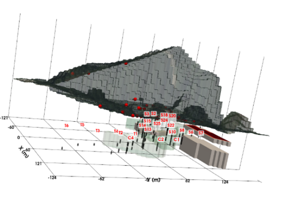

Dromatique vous accompagne dans la numérisation de vos projets à travers trois pôles d'expertise : la cartographie avancée, les services d'acquisition par drone et le développement SIG sur mesure.
Création de plugins QGIS sur mesure, automatisation de tâches et conception d'outils d'aide à la décision adaptés à vos besoins métiers.
Découvrir nos solutionsAcquisition aérienne haute résolution : photogrammétrie, vidéos techniques, modèles numériques de terrain et calculs de volumes.
Nos services dronésTraitement de données spatiales, gestion de bases de données géographiques complexes et réalisation cartographique de pointe.
Notre expertiseDécouvrez notre solution complète intégrée à QGIS pour les experts des Sites et Sols Pollués. Connectez vos données d'analyses, générez des tableaux réglementaires et créez des modèles 3D géologiques en quelques clics.
Explorer Geo-SSP-hère